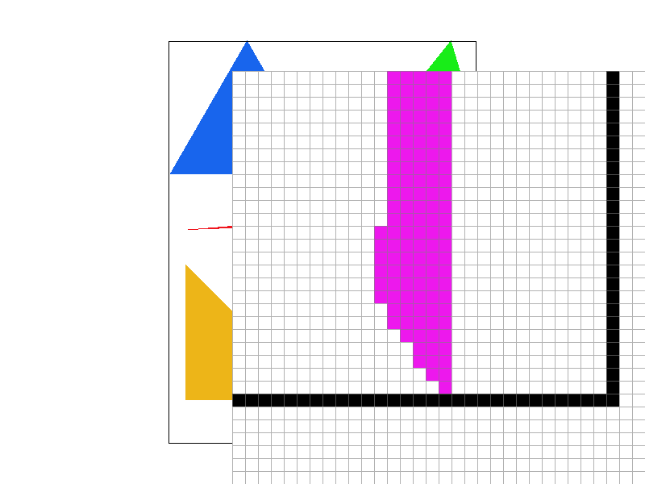
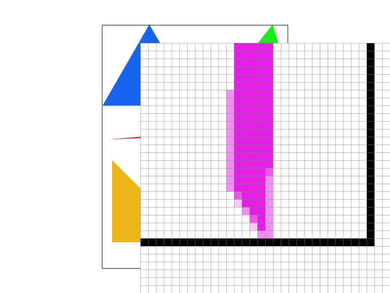
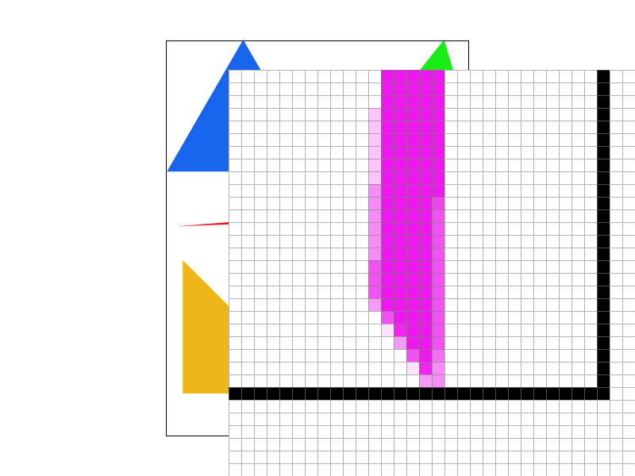
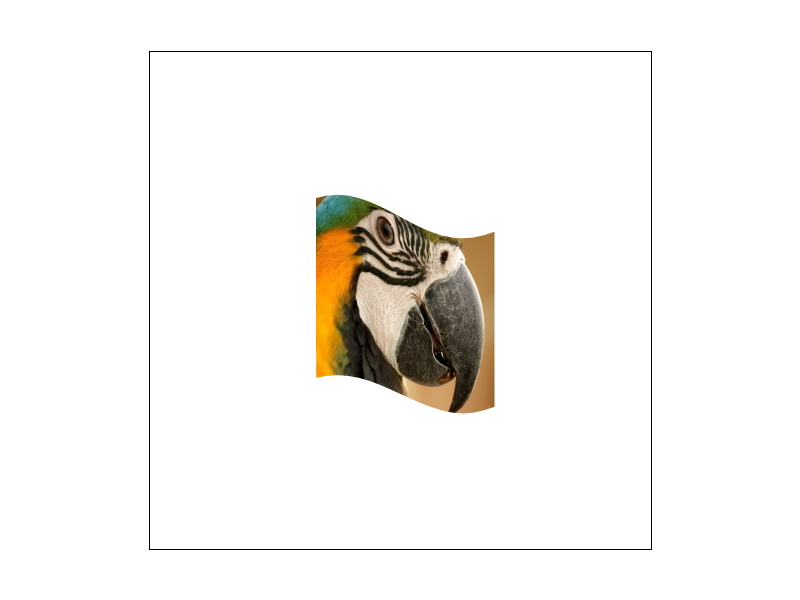
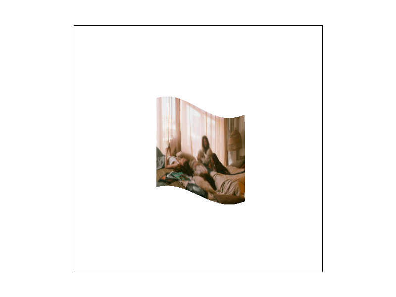

CS184/284A Spring 2025 Homework 1 Write-Up
Overview
In this homework I implemented a small but complete 2D software rasterizer that takes SVG scenes and converts them into pixels using triangle rasterization, supersampling for antialiasing, barycentric interpolation, and textured sampling with mipmaps. The pipeline goes from SVG primitives through transforms into a supersample buffer and finally into an RGB framebuffer.
The most interesting parts were (1) understanding how to turn continuous geometry into discrete samples using edge functions and bounding boxes, (2) seeing directly how supersampling and filtering trade off sharpness for smoothness to fight aliasing, and (3) using derivatives of texture coordinates to select appropriate mipmap levels. Putting all of these together made the abstract ideas from lecture feel concrete, since I could see how each design decision changed actual rendered images.
Task 1: Drawing Single-Color Triangles
To rasterize a triangle, I first transform its three vertices into screen space and compute
an axis-aligned bounding box:
x_min, x_max, y_min, y_max over the three vertex positions. I clamp this box to
the framebuffer dimensions so I only consider pixels that could possibly intersect the
triangle.
For each integer pixel (x, y) inside the bounding box, I loop over a uniform
\(\sqrt{\text{sample\_rate}} \times \sqrt{\text{sample\_rate}}\) grid of
subsamples. Each subsample has a position
\((p_x, p_y) = (x + (j + 0.5)/\sqrt{r}, \; y + (i + 0.5)/\sqrt{r})\) where
r is the sample rate and i, j index into the sub-sample grid.
For each subsample, I evaluate three signed edge functions for the directed edges:
\[ E_0 = (x_1 - x_0)(p_y - y_0) - (y_1 - y_0)(p_x - x_0) \] \[ E_1 = (x_2 - x_1)(p_y - y_1) - (y_2 - y_1)(p_x - x_1) \] \[ E_2 = (x_0 - x_2)(p_y - y_2) - (y_0 - y_2)(p_x - x_2) \]
A subsample is inside the triangle if all three edge values have the same sign (all
non-negative or all non-positive). If so, I write the triangle’s flat color into that
subsample entry in my sample_buffer. Later,
resolve_to_framebuffer averages all subsamples per pixel to produce the final
pixel color.
This algorithm is no worse than checking each sample within the bounding box of the triangle
because that is exactly what it does: the outer loops visit every pixel in the bounding box
and the inner loops visit every sub-sample in those pixels, performing one inside-outside
test per sub-sample. The work is therefore
O(A * r), where A is the number of pixels in the bounding box and
r is the sample rate. I never test samples outside the bounding box and do not
scan the entire screen, so asymptotically it is equivalent to the naive “check every sample
in the bounding box” algorithm.

(Optional extra credit) An optimization direction is to precompute edge function values
along the leftmost sample on a scanline and update them incrementally as I move in
x, as well as early-out entire scanlines when all samples are clearly outside.
In DrawRend::redraw I also have timing hooks to compare a basic path vs an
optimized path using a flag, which can be used to build a timing comparison table.
Task 2: Antialiasing by Supersampling
Instead of storing a single color per pixel, I maintain a sample_buffer of size
width * height * sample_rate. Conceptually, each pixel contains
sample_rate subpixels. For points and lines,
fill_pixel simply fills all samples in that pixel with the same color. For
triangles, I compute coverage at each sub-sample as described above and write the triangle
color to only those sub-samples that lie inside.
At the end of rasterization, resolve_to_framebuffer averages all subsamples in
each pixel to get a single final color, which is converted to 8-bit RGB. Changing the sample
rate is handled by set_sample_rate, which resizes the sample buffer and ensures
subsequent rasterization uses a denser or coarser grid.
Supersampling is useful because it turns a hard yes/no coverage decision into an estimate of the coverage fraction inside each pixel. With only one sample at the pixel center, edges are very jagged: pixels abruptly switch from triangle color to background as the geometry moves. With multiple subsamples, I estimate how much of each pixel is covered and blend accordingly, which smooths out high-frequency changes at edges and reduces aliasing.
Below are screenshots of basic/test4.svg with default viewing parameters and
sample rates 1, 4, and 16. The pixel inspector (zoom window) is positioned over the very
skinny purple triangle corner near the bottom-right to show the effect of supersampling on
thin geometry and jagged edges.
|

|

|

|
Why these results are observed: With sample rate 1, each pixel has a single sample at its center. The rasterizer makes a binary decision: that sample is either inside or outside the triangle. So each pixel is either fully triangle-colored or fully background, producing strong stair-stepping (aliasing) along edges. The skinny triangle corner is especially jagged because many pixels are only partially covered but get a single yes/no result.
With sample rate 4 (a 2×2 grid of subsamples per pixel), we take four point-in-triangle tests per pixel and then average their colors. Pixels that are only partly covered get a blend of triangle color and background according to how many subsamples hit the triangle. That gives a coverage estimate per pixel, so edges look visibly smoother and the skinny corner shows intermediate shades instead of hard steps.
With sample rate 16 (4×4 subsamples per pixel), the coverage estimate is finer. More subsamples near the true edge fall partly inside and partly outside, so the resolved pixel color reflects a more accurate fractional coverage. Edges and the thin corner appear much smoother. The tradeoff is higher cost: 16× more samples per pixel and proportionally more work in rasterization and resolve.
Task 3: Transforms
The cubeman robot is constructed from rectangles, each with its own transform. Posing him is
therefore a matter of composing translate, rotate, and
scale matrices on the body parts. Conceptually, each part has a local
coordinate frame, and I place it in world space by multiplying the appropriate transforms.
In my updated my_robot.svg, I used these transforms to give cubeman a more
dynamic pose:
- A global transform slightly tilts his torso forward, so he looks like he is in motion instead of standing upright.
- One arm is rotated up about the shoulder, with a small additional rotation at the elbow, to create a clear waving gesture.
- The legs are translated and rotated so one leg is stepping forward and the other is behind, suggesting a walking or running stride.
- I also made minor color and proportion adjustments (like brighter hands and head) to emphasize the motion and make the character stand out.
What I was trying to do with cubeman: I wanted him to look like he’s running toward the viewer while waving hello—a single frozen frame of “hey, I’m coming!” So I leaned his whole body forward with a small rotation, put his right arm up with an extra bend at the elbow for a clear wave, swung his left arm back and left leg forward and right leg back to suggest a mid-stride run. I changed his colors (navy torso, warm yellow head, coral limbs and orange arm with a yellow “hand” on the waving arm) and slightly narrowed the torso and enlarged the head so he reads more as a friendly character in motion rather than a static robot.

my_robot.svg, posed to be waving and mid-step using
combinations of translate, rotate, and scale.
Task 4: Barycentric coordinates
Barycentric coordinates describe how much each corner of a triangle “contributes” to a point inside it. Instead of using \(x\) and \(y\), points are described by three weights—one per vertex—that sum to 1. The closer the point is to a vertex, the higher that vertex’s weight; at a vertex, that weight is 1 and the others are 0. That makes it natural to blend vertex attributes (like color) across the triangle: the color at any interior point is just the same weighted mix of the three vertex colors. The image below shows a single triangle with one red, one green, and one blue vertex; the smooth gradient is exactly that barycentric blend.

Formally, given vertices \(A\), \(B\), and \(C\), any point \(P\) inside the triangle can be written as:
\[ P = \alpha A + \beta B + \gamma C,\quad \text{with } \alpha + \beta + \gamma = 1,\; \alpha, \beta, \gamma \ge 0. \]
Geometrically, each weight corresponds to the relative area of the subtriangle opposite that vertex. Points closer to vertex \(A\) have a larger \(\alpha\), and similarly for the other vertices. Because barycentric coordinates vary linearly across the triangle, they are ideal for interpolating vertex attributes such as colors and texture coordinates.
In my implementation, I reuse the edge functions already computed for the inside-outside test to derive barycentric coordinates at each subsample. Once I have \((\alpha, \beta, \gamma)\), I can interpolate either colors (for smooth color gradients) or texture coordinates (for texture mapping), simply by taking the corresponding weighted sum.
Task 5: "Pixel sampling" for texture mapping
Pixel sampling in my own words: The texture is a grid of colored texels, but when we map it onto a triangle we get continuous \((u, v)\) coordinates that usually fall between texel centers. Pixel sampling is the rule we use to turn that fractional \((u, v)\) into a single color. So it’s literally “which texel(s) do we read, and how do we combine them?” Different rules give different tradeoffs between sharpness, smoothness, and cost.
In my pipeline, once a subsample is inside a textured triangle, I use barycentric
coordinates to get its \((u, v)\). That plus the current pixel/level sampling mode goes into
a SampleParams; Texture::sample then dispatches to the right
routine (nearest or bilinear on the chosen mip level). So texture mapping is: interpolate
\((u, v)\) per subsample → call pixel sampling to get a color → write that into the
sample buffer.
Two pixel sampling methods:
-
Nearest neighbor (
P_NEAREST): I convert \((u, v)\) into integer texel indices by rounding to the nearest texel center and return the color of that texel. This is fast and preserves sharp edges in the texture, but it easily produces blocky artifacts and aliasing (especially when the texture is minified or magnified). -
Bilinear interpolation (
P_LINEAR): I find the four texels surrounding \((u, v)\), compute fractional distances in the \(u\) and \(v\) directions, and take a weighted average of the four texels (first horizontally, then vertically). This smooths discontinuities between texels and reduces jaggedness and shimmering, at the cost of slightly more computation and a bit of blur.
In rasterize_textured_triangle, after confirming a subsample is inside the
triangle, I compute barycentric coordinates using edge functions, interpolate the three
vertices’ texture coordinates to a single \((u, v)\), and also compute neighboring
p_dx_uv and p_dy_uv values by moving one pixel in screen space.
These derivatives are stored in a SampleParams struct along with the current
psm and lsm, and passed to Texture::sample.
For this task I focus on changing psm between nearest and bilinear while
holding the level sampling mode fixed (e.g. L_ZERO).
Scene and pixel inspector: I used a texture-mapped scene from
svg/texmap/. texmap/test4.svg and texmap/test1.svg
both use the parrot texture and are good for comparison. I positioned the pixel
inspector (zoom window) over a high-detail region—e.g. the parrot’s feathers or
eye—where the texture has fine variation. There, bilinear sampling clearly defeats
nearest: nearest shows blocky texels and jagged boundaries, while bilinear gives smooth
gradients between texels.
How to capture the four screenshots: Run the app from build/, load
svg/texmap/test4.svg (or test1.svg), and enable the pixel
inspector (zoom). Move the inspector over a detailed part of the parrot (feathers or eye).
Use L to set level sampling to “level zero” so we only compare pixel
sampling. For each of the four combinations, set the mode then press S
to save (screenshots go to the current working directory, e.g. build/).
Copy the four PNGs into docs/images/ and rename them as below.
- Nearest + 1 sample/pixel:
Puntil “nearest pixel”,-until rate 1 →S→ save astask5_nearest_1spp.png - Nearest + 16 samples/pixel: same pixel mode,
=until rate 16 →S→task5_nearest_16spp.png - Bilinear + 1 sample/pixel:
Puntil “bilinear pixel”,-until rate 1 →S→task5_bilinear_1spp.png - Bilinear + 16 samples/pixel: bilinear,
=until rate 16 →S→task5_bilinear_16spp.png

|

|

|

|
Relative differences: On a high-frequency texture from svg/texmap,
nearest at 1 sample/pixel looks very blocky—individual texels and strong aliasing
(moiré, shimmering) are obvious. Nearest at 16 samples/pixel is better because
supersampling averages multiple samples per pixel near edges, but blockiness between
texels remains since each subsample still returns a single texel color. Bilinear at 1
sample/pixel already looks smoother: sharp jumps at texel boundaries become smooth
transitions. Bilinear at 16 samples/pixel combines both: supersampling reduces geometric
aliasing and bilinear reduces texture aliasing, so the result is the smoothest of the
four.
When is the difference between nearest and bilinear large? The gap is biggest when
(1) the texture has high spatial frequency (fine details, thin lines, small text) and
(2) the texture is minified (one pixel covers many texels) or the sampling rate is low.
In that regime, nearest sampling makes the chosen texel jump abruptly from one pixel to
the next, so you see blocky boundaries and moiré. Bilinear sampling blends the four
neighboring texels, so the color changes smoothly and better respects the sampling
theorem. When the texture is magnified (one texel spans many pixels) or when the
texture is very smooth, nearest and bilinear look much closer; the benefit of bilinear
is most visible in high-detail, minified regions like the parrot’s feathers or eye in
texmap/test4.svg.
Task 6: "Level Sampling" with mipmaps for texture mapping
Level sampling in my own words: When we draw a texture onto the screen, each pixel corresponds to some region in texture space—sometimes a tiny patch (magnification), sometimes a large patch (minification). Level sampling is the rule for which mip level we read from: we have a pyramid of prefiltered, downsampled versions of the texture (mipmaps). If we always use the top level (full resolution), we get aliasing when one pixel covers many texels; level sampling uses the screen-space derivatives of \((u,v)\) to estimate that footprint, compute a continuous mip level \(\ell = \log_2 d\), and then either round to one level (L_NEAREST), blend two levels (L_LINEAR), or ignore it and always use level 0 (L_ZERO). So level sampling trades a bit of memory and work for much better antialiasing when the texture is minified.
Implementation: I estimate the pixel footprint in texture space using derivatives of
\((u,v)\) with respect to screen \(x\) and \(y\). In Texture::get_level I compute:
\[ d^2_x = (\Delta u / \Delta x)^2 + (\Delta v / \Delta x)^2, \quad d^2_y = (\Delta u / \Delta y)^2 + (\Delta v / \Delta y)^2, \] \[ d = \sqrt{\max(d^2_x, d^2_y)}, \quad \text{level} = \log_2 d. \]
Intuitively, when a pixel covers many texels in texture space, d is large and I
should use a higher mip level (more blurred, lower resolution) to avoid aliasing. When a
pixel covers only a small region in texture space, I use a lower mip level (sharper).
I implemented three level sampling modes:
-
L_ZERO: always sample from mip level 0 (the original, highest resolution texture). -
L_NEAREST: round the computed level to the nearest integer and sample that single mip level. -
L_LINEAR: clamp the level to the valid range, then linearly interpolate between the two nearest mip levels (trilinear filtering).
There are important tradeoffs between pixel sampling, level sampling, and supersampling:
- Pixel sampling (nearest vs bilinear) affects how colors are combined within a given mip level. Nearest is fastest but aliases more; bilinear is slightly slower but smoother.
-
Level sampling (L_ZERO, L_NEAREST, L_LINEAR) chooses which mip level(s) to sample.
Mipmaps add memory overhead (roughly one-third extra), but they dramatically reduce
aliasing when textures are minified.
L_LINEARsmooths transitions between mip levels compared toL_NEAREST. - Supersampling increases the number of samples per pixel. It is very powerful but also very expensive computationally and in sample buffer memory (~sample_rate times more). Mipmapping and bilinear filtering are a more targeted and efficient way to handle texture aliasing.
How the four screenshots were made: I use a custom PNG (a photo with curtains, fabrics,
and fine detail) in svg/texmap/pexels_test.svg (texture pexels_scene.png).
You can run ./draw with that SVG, then use L to cycle level sampling
(L_ZERO, L_NEAREST, L_LINEAR) and P for pixel sampling; press S to save
a screenshot to the current directory. Alternatively, from the repo root run
./scripts/render_task6_screenshots.sh to render all four combinations headlessly and
copy them into docs/images/.

|
|

|

|
Using the custom PNG in pexels_test.svg, L_ZERO + P_NEAREST is the
fastest but has strong aliasing when the texture is minified: patterns shimmer and exhibit
moiré. L_ZERO + P_LINEAR smooths texel boundaries but still aliases when there
is a lot of minification.
L_NEAREST + P_NEAREST uses coarser mip levels when appropriate, significantly
reducing aliasing, but transitions between levels and the blockiness of nearest sampling can
still show up. L_NEAREST + P_LINEAR gives the best quality overall: mipmaps
handle minification while bilinear smoothing reduces artifacts within each level and across
level boundaries. It achieves very good antialiasing with much less cost than very high
supersampling rates.
(Optional) Task 7: Extra Credit - Draw Something Creative!
I saved my best SVG as competition.svg in docs/ and rendered it
at 800×800 using the homework rasterizer (./draw docs/competition.svg, then
S to save a screenshot). Below is the 800×800 PNG screenshot shown in the
write-up.
docs/competition.svgHow I did it
I wrote a Python script in src/generate_competition_svg.py that procedurally
generates the SVG. The script outputs only elements the rasterizer supports: solid
<polygon> triangles, a <texture> declaration, and
<textri> textured triangles (no paths or curves).
What the script generates: An 800×800 scene with (1) a two-tone sky
gradient (four large triangles); (2) concentric spiral arms—several rings of 24 wedge
triangles each, with radius and angle parameterized by t in [0,1] and colors
cycling per arm to stress geometric (edge) antialiasing; (3) a tiled diamond pattern—a grid
of small diamonds (each diamond is four triangles around a center), with alternating row
offset and color shade varying by cell; (4) three textured quads (each quad as two
<textri> elements) using different UV regions of the same texture to
show texture antialiasing; (5) layered hill polygons and a few foreground accent triangles.
How to run it: From the repo root, run
python3 src/generate_competition_svg.py. It writes docs/competition.svg.
Then open that SVG in the rasterizer (e.g. ./draw docs/competition.svg), set
resolution to 800×800 if needed, and press S to save the PNG screenshot;
place that PNG in hw1/images/competition_800x800.png so this write-up can
display it.